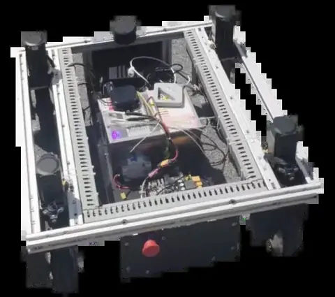
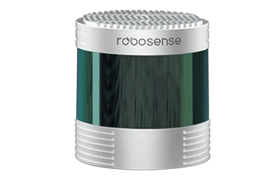
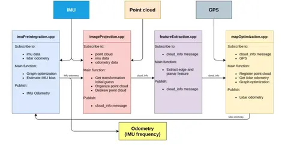
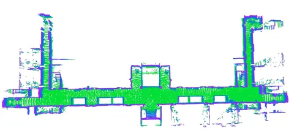

激光导航LiDAR navigation · 2022.09—2023.01Sep 2022–Jan 2023
三维激光雷达与惯性融合导航3D LiDAR–inertial mapping and navigation
面向三维环境中的定位建图与自主避障，以 LIO-SAM 融合激光点云和 IMU，连接目标点规划与底盘控制；已在走廊和室内障碍环境完成实机导航演示。For 3D mapping, localization, and obstacle avoidance, LIO-SAM fuses LiDAR and IMU measurements with goal planning and base control; real demonstrations cover corridors and indoor obstacles.
- 研发阶段Development period
- 2022.09—2023.01Sep 2022–Jan 2023
- 主要传感器Sensors
- 三维激光雷达与 IMU3D LiDAR and IMU
项目背景Background
复杂室内环境存在不同高度障碍和连续转弯，需要利用三维几何和惯性信息估计机器人运动，并支持目标点导航。Indoor environments contain obstacles at different heights and repeated turns, motivating joint use of 3D geometry and inertial motion for localization and navigation.
仅依靠平面扫描难以描述悬空、低矮或形状复杂的障碍，连续运动还会改变点云采样时刻对应的姿态。三维激光与惯性融合既提供空间结构，也为运动过程中的位姿连续性提供约束。Planar scans cannot fully describe overhanging, low, or irregular obstacles, while motion changes the pose associated with each point-cloud sample. LiDAR–inertial fusion supplies both spatial structure and constraints on pose continuity.
任务说明Task
采集环境点云并建立地图，持续估计机器人位姿，接收目标位置后生成路径和避障轨迹，驱动底盘到达目标。Build a point-cloud map, estimate the robot pose continuously, and plan obstacle-aware motion to a specified goal.
工作流程由地图建立、位姿估计、目标下发、全局路径与局部轨迹生成组成。演示同时观察机器人实际通行和地图中的位置、路径变化，从而检查感知定位与底盘执行是否对应。The workflow includes map creation, pose estimation, goal specification, and global and local planning. Physical traversal and map-side pose and path updates are observed together to check consistency between estimation and base execution.
设备说明Robot hardware
平台为四轮无人车，搭载三维激光雷达、IMU 和计算控制单元。设备及建图结果如下。A four-wheel robot carries 3D LiDAR, IMU, and computing/control hardware. The slides show the sensor, base integration, and mapping results.


系统和关键技术System and key technologies
LIO-SAM 将惯性预积分、激光点云配准和因子图优化连接起来，输出位姿与地图；导航层利用地图和实时障碍信息规划路径与局部运动。LIO-SAM combines inertial preintegration, LiDAR alignment, and factor-graph optimization to estimate pose and map the environment. Navigation uses the map and obstacle observations to plan motion.
惯性预积分为相邻时刻运动提供先验，激光配准给出环境几何约束，因子图优化整合这些信息。导航层再把定位结果与障碍信息转换为可行路径及局部控制目标；可视化用于检查地图、当前位置和局部轨迹的对应关系。Inertial preintegration supplies a motion prior, LiDAR registration provides geometric constraints, and factor-graph optimization combines them. Navigation converts estimated pose and obstacle observations into feasible paths and local control targets, visualized alongside the map.


演示与结果Demonstrations and results
视频包括室内绕障、目标点接近、不同布局通行以及 RViz 中的地图与轨迹显示。所选实机片段主要在室内进行。Videos cover indoor obstacle avoidance, goal approach, movement across layouts, and map/trajectory visualization in RViz. The physical demonstrations are primarily indoors.